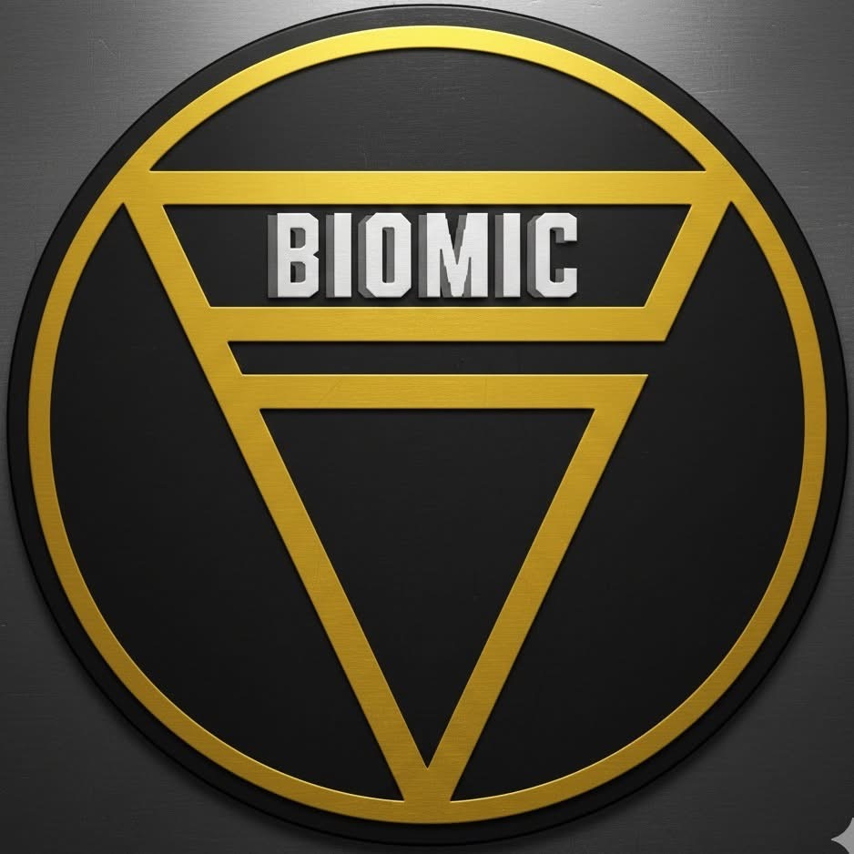

Aircon Cleaning
Deep cleaning service to improve cooling efficiency, airflow, and indoor comfort.
Request service
BIOMIC WHIZBIOMIC WHIZ TRADING
Professional air conditioner service, maintenance, repair, and installation for residential and commercial clients in Manila.
Authorized Service Center for Daikin Air Conditioners
Services
Reliable technical service for cleaning, repair, installation, diagnostics, maintenance, and quotation requests.
Deep cleaning service to improve cooling efficiency, airflow, and indoor comfort.
Request serviceProfessional repair support for cooling issues, leaks, noise, and system faults.
Request serviceTechnical installation support for residential and commercial air conditioning units.
Request serviceScheduled maintenance to help reduce breakdowns and maintain reliable operation.
Request serviceInspection and diagnostic service to identify issues before repair or quotation.
Request serviceClear service assessment and quotation support for labor, parts, and recommended work.
Request serviceAbout
BIOMIC WHIZ TRADING provides professional air conditioning services backed by technical experience and authorized Daikin service support.
We help customers maintain reliable cooling through proper inspection, repair, cleaning, and scheduled maintenance for residential and commercial air conditioning systems.
Why choose us
A premium service experience built around reliable scheduling, clear assessment, and professional customer assistance.
Process
Contact
Authorized Daikin Air Conditioners Service Center
1959 B Gerardo Tuazon St., Sampaloc, Manila
Tap a number to call.